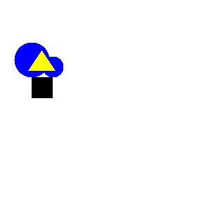
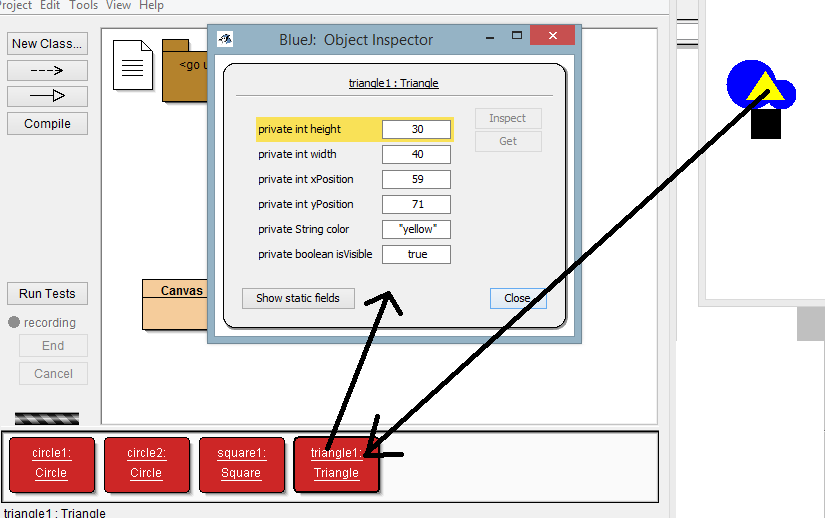
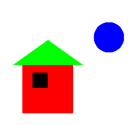
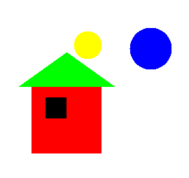
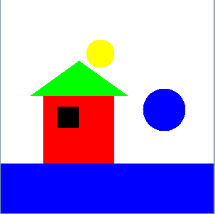
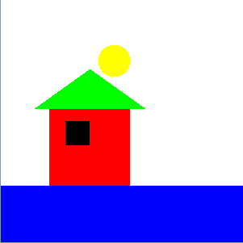
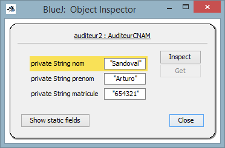
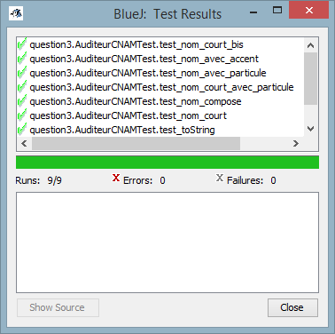

NFP 121 - TP1
L'environnement de
programmation BlueJ
| Nom: |
Zafra Camara |
| Prénom: |
David |
| Matricule: |
FOD_0G5DRNAUKN7 |
Question 1 :
L'image suivante est le résultat de l'utilisation des
quatre instances créées à partir des classes "circle", "triangle" et
"Square". Pour leur affichage on a utilisé leurs méthodes associées,
qui nous permettent de changer des proprietés telles que sa
visibilité, sa couleur ou sa taille.

La figure est donc composée de quatre objects (deux circles,
un
triangle en un carré) dont ses champs associés son visibles en cliquant
droit (puis sur "Inspect") sur l'instance créée à partir de chaque
classe. Cela nous permets de d'apprécier les différentes valeurs
passées comme paramètres aux méthodes de chaque objet employées pour
l'affichage du dessin final. C'est le cas, par exemple, de la couleur
du triangle (dans ce cas jaune), qui a été changé en utilisant la
méthode "color", à laquelle on a passé la valeur chaîne de caractères
"yellow" comme paramètre.

Code-source et documentation:
Question 2 :
2.1
Pour changer la couleur du dessin crée à partir de la
nouvelle instance "my_picture" appartenant à la classe "Picture", on
modifie le code source Picture.java. Pour cela on ira sur la méthode
"draw" puis sur la méthode "sun.changeColor" et on remplacera la valeur
"yellow" par une nouvelle "blue": ce changement de paramètre dans la
méthode de l'instance entraîne une modification automatique de la
couleur de celle-ci.

Voici le bout de code extrait de la méthode "draw" sur lequel on
effectue le changement du paramètre sur la méthode sun.changeColor:
sun = new Circle();
sun.changeColor("blue");
sun.moveHorizontal(180);
sun.moveVertical(-10);
sun.changeSize(60);
sun.makeVisible();
|
2.2
Pour la création de la nouvelle donnée de l'instance qui représentera
le deuxième solei jaune du dessin, on ajoutera au code source
"Picture.java" une nouvelle instance de type "Circle" (classe Circle)
qu'on appelera "sun2". Ensuite on utilisera toutes les méthodes de
l'instance "sun2" (héritées de la classe "Circle") pour effectuer les
modifications néccessaires: changement de la taille
("sun2.changeSize"), de sa visibilité ("sun2.makeVisible()"), etc.:
private Circle sun2;
.
.
.
sun2 = new Circle();
sun2.changeColor("yellow");
sun2.moveHorizontal(100);
sun2.moveVertical(-5);
sun2.changeSize(40);
sun2.makeVisible();
|
Voici le nouvelle solei
jaune ajouté:

2.3
Pour coucher le soleil on créé la méthode
sunset(),
qui nous permettra de faire descendre le soleil bleu. On ajoutera aussi
le sol (
ground) avec la même couleur du soleil, ce
qui nous rendra possible la délimitation de la zone derrière laquelle
le soleil est censé se coucher.
ground = new Square();
ground.makeVisible();
ground.changeColor("blue");
ground.changeSize(320);
ground.moveVertical(180);
ground.moveHorizontal(-70);
|
/**
* Make the blue sun set
*/
public void sunset() {
sun.slowMoveVertical(180);
sun.makeInvisible();
}
}
|
Et voici la séquence correspondante au
nouveau dessin qui se crée une fois la méthode "sunset" ajoutée à la
fin de la méthode "draw":
 
Code-source et documentation:
Question 3 :
3.3
Pour completer le code manquant des méthodes nom(), prenom()
et matricule() on a juste reajouté le bout code qui permet
de renvoyer chaque valeur associée au champs de l'objet AuditeurCNAM créé:
/**
* Lecture du nom de l'auditeur.
*
* @return son nom
*/
public String nom() {
return this.nom;
}
/**
* Lecture du prénom de l'auditeur.
*
* @return son prénom
*/
public String prenom() {
return this.prenom;
}
/**
* Lecture du matricule de l'auditeur.
*
* @return son matricule
*/
public String matricule() {
return this.matricule;
}
|
Dans le cas de la méthode login(), une autre
auxiliaire sansAccents()
a été créée avant dans le but de identifier n'importe quelle voyelle
des chaînes "nom" et "prenom" dont on aura besoin lors de la création
du login:
/** Retourne une chaîne en remplaçant les caractères accentués par les caractères non-accentués correspondants.
* @param s la chaîne accentuée initiale
* @return la chaîne non accentuée
*/
public String sansAccents(String s) {
String sAccents = "äâàáåãéèëêòóôõöøìíîïùúûüýñçÿÄÂÀÁÅÃÉÈËÊÒÓÔÕÖØÌÍÎÏÙÚÛÜÝÑÇÝ";
String sSansAccents ="aaaaaaeeeeooooooiiiiuuuuyncyaaaaaaeeeeooooooiiiiuuuuyncy";
int longueur = sAccents.length();
for (int i=0;i<longueur;i++) {
s = s.replace(sAccents.charAt(i),sSansAccents.charAt(i));
}
return s;
}
|
Et voici le code pour la méthode
login(), laquelle
fait appel à plusieurs méthodes des librairies de Java telles que
replaceAll(),
toLowerCase(), substring(), replaceAll() ou Math.min(), de
la même façon que l'on s'en serve de
sansAccents().
/**
* le login au Cnam : 6 premières lettres du nom suivies de la première
* lettre du prénom séparées de '_' . le login retourné est en minuscules,
* le trait d'union, ou spéciaux <i>(pour unix)</i> sont remplacés par des
* '_' pas de caractères accentués pour le login voir les classes
* prédéfines, java.lang.String : les méthodes replaceAll, toLowerCase et
* substring java.lang.Math : la méthode min<br>
* <b>BlueJ : Menu Aide</b>
*
* @return le login du Cnam simplifié, sans les adaptations dues aux
* homonymes...
*/
public String login() {
String nomL;
String prenomL;
nomL=this.nom();
nomL=nomL.replaceAll("[0-9]","");
nomL=sansAccents(nomL).toLowerCase().substring(0, Math.min(nomL.length(),6)).replaceAll("[^a-z]","_");
prenomL=this.prenom();
prenomL=prenomL.replaceAll("[0-9]","");
prenomL=sansAccents(prenomL).toLowerCase().substring(0,1).replaceAll("[^a-z]","_");
return nomL+"_"+prenomL;
}
|
3.4
Deux nouvelles instances ont été créées à partir
de la classe
AuditeurCNAM
et ensuite inspectées:

3.5 et
3.6 Après une vérification
de la correcte exécution des test unitaires proposés...

... on a créé nos propres
test "testCheck_1" et "testCheck_nom_prenom_matricule_charact_spec" qui
permet de mettre en pratique la création des mes propres test
unitaires pour constater que la création du login et le remplacement
des caractères spéciaux se font correctement:
public void testCheck_1()
{
question3.AuditeurCNAM auditeur3 = new question3.AuditeurCNAM("Paul", "Presté", "12-653");
assertEquals("Paul Presté login : paul_p", auditeur3.toString());
}
public void testCheck_nom_prenom_matricule_charact_spec()
{
question3.AuditeurCNAM auditeur2 = new question3.AuditeurCNAM("Ératon", "^EæTÉO", "24556Af");
assertEquals("Ératon", auditeur2.nom());
assertEquals("^EæTÉO", auditeur2.prenom());
assertEquals("24556Af", auditeur2.matricule());
assertEquals("Ératon ^EæTÉO login : eraton__", auditeur2.toString());
assertEquals("eraton__", auditeur2.login());
}
|
Code-source et documentation:
Conclusion
Ce
premier travail pratique m'a permis de me familiariser avec BlueJ et
la lecture en simultanée des ouvrages conseillés pour complémenter cet
étude (notamment les guides d'introduction avec le langage JAVA) m'ont
permis de m'approcher aux premières notions de la programmation
orientée objets.
Biliographie